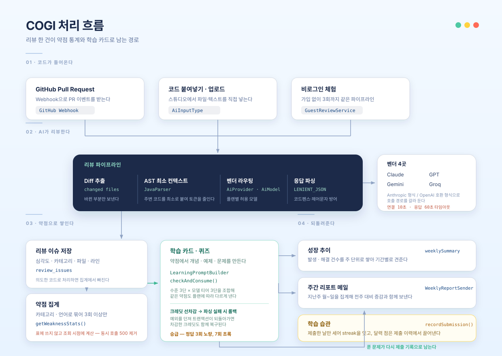
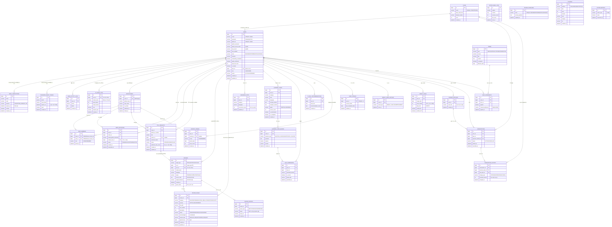

개요
GitHub Pull Request를 AI가 리뷰하고, 반복되는 지적을 약점으로 모아 학습 카드와 퀴즈로 만들어 주는 서비스입니다.
제가 맡은 것은 학습·리텐션 도메인과 AI 벤더 연동 계층입니다.
API 엔드포인트 26개를 정의·구현하고 단위 테스트 47건을 작성했습니다.
프론트엔드 화면은 Claude·Gemini로 시안을 만들어 붙였고, API 연동을 직접 설계 및 구현·개발 했습니다.

분석
요구사항 정의서 · 기능 정의서 · API 명세서 · 테이블 정의서 · WBS를 문서로 만들고 담당을 나눴습니다.
집계 기준이나 승급 규칙처럼 해석이 갈릴 수 있는 항목은, FR 번호를 붙여 조건을 문장으로 확정했습니다.
약점 집계 기준(FR-55·56), 승급 규칙(FR-61·62), streak 초기화(FR-73·74)까지 조건을 문장으로 확정
제 몫은 AI 연동, 약점 통계, 학습카드·퀴즈, 리텐션, 프론트엔드 연동
설계
도메인 단위로 패키지를 나누고, 서비스는 인터페이스와 구현체로 분리했습니다.
AI 호출은 global/ai 한 곳에 모아, 도메인
코드에서 벤더를 직접 참조하지 않도록 분리했습니다.
도메인 패키지 분리
learning · retention · guest · review · growth pr · repo · payment · terms · user 로 분리.
벤더 호출은 global/ai 한 곳에 집중.
벤더 4곳을 한 인터페이스로
AiProvider는 호출 방식, AiModel은 모델 문자열과 토큰 단가 담당.
Claude는 Anthropic 형식, 나머지는 OpenAI 호환 형식.
수준 × 모델 티어 조합
초·중·고급 프롬프트와 모델 티어 3단을 LearningPromptBuilder가 합칩니다.
같은 약점도 수준과 플랜에 따라 결과가 달라집니다.
크레딧 선차감 후 롤백
checkAndConsume()으로 선차감 후 AI 호출.
응답 파싱 실패 시 예외로 트랜잭션 롤백, 크레딧도 함께 복구.
깨진 응답까지 파싱
stripCodeFence()로 코드 블록 표시 제거.
Claude 확장 사고 모델은 content[]에서 type=="text"만 추출.
학습 도메인은 제어문자를 허용하는 LENIENT_JSON으로 파싱.
벤더별 사용량 조회 분리
기존: 앱이 남긴 ai_usage_logs를 일괄 집계해 관리자 화면에 표시.
현재: 실제 청구액과 맞추려고 벤더 Admin API 추가.
규격이 달라 fetchOpenAi()·fetchClaude()로 분리.

주요 기능
담당 파트 (정상연)
AI 벤더 연동 (global/ai)
AiProvider·AiModel로 호출 방식과 단가를 분리- 타임아웃 · 코드 블록 표시 · 스키마 검사를 클라이언트 한 곳에 모음
약점 통계 (learning)
- 카테고리·언어로 묶어 3회 이상만 집계
- 의도한 코드로 처리한 지적은 집계에서 제외
학습카드 · 퀴즈 (learning)
- 카드·퀴즈·학습 계획 생성과 승급 히스토리
- 크레딧 선차감, 파싱 실패 시 롤백으로 복구
AI 스킬 추천 (learning)
- 약점 기반·자유 입력 두 경로를 같은 스키마로 통일
- 생성 결과를 내 소유 행으로 남겨 즐겨찾기와 연결
리텐션 (retention)
- 제출 기준 streak과 누적 학습일 집계
- 달력은 따로 저장하지 않고 제출 이력에서 유도
프론트엔드 (AI 활용)
- 인증(로그인·회원가입·OAuth 콜백·온보딩·2FA) 화면
- 스튜디오·학습·성장 화면과 모바일 전용 화면 15개
- Claude·Gemini·Figma로 시안·컴포넌트를 만들고
API 연동을 직접 설계 및 구현·개발
개발과 평가
평가셋을 돌려 문제를 찾았습니다. 고친 다음 같은 평가셋을 한 번 더 돌렸습니다.
돌린 평가셋은 3벌, 138문항입니다. 카드 생성 73 · 세이프티 50 · 벤더 비교 15.
모두 로컬 서버에서 받은 응답입니다.
평가 기준
세 축으로 나눠 확인했습니다 — 구조(JSON·스키마·코드 블록 표시), 안전성(답하면 안 되는 질문을 막는가), 모델 선택(세 벤더 비교).
벤더는 한 인터페이스로 감싸 뒀습니다. 모델 이름만 바꿔 같은 평가셋을 그대로 실행합니다.
프롬프트에 출력 형식을 지정해 카드 응답을 JSON으로만 받습니다. 응답 앞뒤에 마크다운 코드 블록 표시가 붙어 오면 떼고 읽습니다.
한 번에 안 읽히면 제어문자를 허용하도록 설정을 바꿔 다시 읽습니다.
몇 건이 걸러지는지 보려고 카드 생성 요청 100건을 로컬 서버에 넣었습니다.
응답에 코드 블록 표시가 남아 있으면 실패로 센다
conceptContent keyPoints 등 카드 필수 8개 필드가 다 왔는지 대조한다평가셋 구성
약점 20종(BUG · PERFORMANCE · CODE_SMELL · CONVENTION · SECURITY 에서 4개씩)을 Java · TypeScript · Python · Kotlin 네 언어와 언어 없이 보내는 경우로 한 번씩 — 20 × 5 = 100건. 수준 세 단계를 고르게 섞었습니다.
언어 없이 보내는 20건은, 값이 비었을 때 어떻게 동작하는지 보려고 일부러 넣은 입력입니다.
문제 해결
실제 커밋에 남은 문제 해결 과정을 발견 · 원인 · 해결 순으로 정리했습니다.
재현 조건이 일정하지 않은 문제가 많아 원인을 찾는 데 시간이 걸렸습니다.
약점 화면과 스킬 추천 화면 동시 진입 시 500 오류. React StrictMode 이중 실행에서도 재현.
조회 API 가 매 호출마다 deleteByUserId 후 재삽입. 뒤 트랜잭션이 앞에서 이미 지운 행을 다시 삭제.
집계 테이블 쓰기 제거. getWeaknessStats() 에서 조회 시점 계산으로 전환.
같은 카드인데 퀴즈 생성이 성공하기도, JSON 파싱에서 실패하기도. 재현 조건 불명확.
프롬프트가 문제 본문에 코드블록을 요구 → 모델이 raw 개행을 그대로 출력. 스키마에 없는 키 하나에 역직렬화 전체 실패.
AI 응답 전용 LENIENT_JSON 리더 분리. 제어문자 허용 · 미지 키 무시. 공용 ObjectMapper 는 미변경.
벤더 503 후 재시도하는 동안 스튜디오가 “코드 분석 중…”에서 무한 대기.
RestClient.builder().build() 가 기본 생성자로 생성 → 연결·응답 타임아웃 미설정.
연결 10초 · 응답 60초 명시. 실패는 AI_MODEL_CALL_FAILED 로 올려 화면에 종료 상태 표시.
실제 모델 연동 시 400 과 빈 응답이 섞여 나옴. 이슈가 많은 리뷰에서는 JSON 이 중간에서 잘림.
OpenAI 신형은 max_tokens 거부, max_completion_tokens 요구. Claude 확장 사고 모델은 content[0] 이 thinking 블록이라 텍스트가 빔.
호출 경로를 callOpenAiCompatible() · callAnthropic() 으로 분기. type=="text" 블록만 추출, 상한 8192 로 상향.
모델 선택 근거
같은 코드 15건을 세 벤더에 실행했습니다. 정확도, 속도, 비용이 각각 다른 모델을 가리킵니다.
벤더별 측정값
| 벤더 | 모델 | 성공률 | 분류 정확도 | 응답 중앙값 | 입력/출력 토큰 | 1건당 비용 |
|---|---|---|---|---|---|---|
| Claude | claude-haiku-4-5 |
93% (14/15) | 64% (9/14) | 3.1초 | 3588 / 257 | $0.0049 |
| GPT | gpt-5.6-luna |
100% (15/15) | 87% (13/15) | 8.1초 | 2462 / 569 | $0.0059 |
| Gemini | gemini-3.5-flash |
93% (14/15) | 100% (14/14) | 7.5초 | 2231 / 218 | $0.0053 |
같은 코드 15건을 모델 이름만 바꿔 세 번 실행했습니다. 호출 계층이 벤더를 한 인터페이스로 감싸고 있어 문자열 하나만 바꾸면 됩니다.
Claude가 GPT보다 2.6배 빨랐고 비용도 낮았습니다. 지적 건수는 세 벤더가 비슷했는데 분류 정확도는 갈렸습니다.
토큰과 비용은 서비스가 벤더 응답에서 받아 ai_usage_logs 에 적어 둔 값입니다.
지금 1차는 Claude 입니다. 응답이 3.1초 로 가장 빠르고 건당 비용도 가장 낮습니다.
분류 정확도만 보면 Gemini 가 낫습니다. 64%와 100%는 이 표에서 차이가 가장 큽니다.
Claude 가 낮게 나온 것은 등급 때문일 수 있습니다. 1차로 쓴 claude-haiku-4-5 는 Claude 중 가장 빠르고 싼 등급입니다. 놓친 4건은 모두 “지적할 문제를 찾지 못했습니다”로 돌아왔습니다. 같은 조건에서 Sonnet 급은 재보지 않았습니다. 이 표에는 벤더 차이와 등급 차이가 섞여 있습니다.
측정 결과
마지막 실행의 전체 값입니다.
카드 생성 73건
| 단계 | 건수 | 무슨 일이 있었나 |
|---|---|---|
| 보낸 요청 | 73건 | 평가셋 전체 |
| ○ 언어 없이 보낸 요청 | −5건 | language 를 빈 값으로 보낸 문항 14건 가운데 5건이 HTTP 502. 2.5~3.0초 만에 끝났으니 모델이 답을 만들기 전입니다 |
| 모델이 답을 준 요청 | 68건 | 여기까지가 생성률의 분모입니다 |
| 카드 생성 성공 | 100% (68/68) | 스키마와 코드 블록 표시 검사까지 전부 통과 |
| 지표 | 결과 | 통과 | 분모 |
|---|---|---|---|
| JSON 파싱 · 코드 블록 표시 없음 · 스키마 준수 | 100% · 100% · 100% | 셋 다 68/68 | 받은 카드 68건 |
언어를 지정한 59건은 100%. 언어를 빈 값으로 보낸 14건만 9/14 로, 실패 5건이 전부 여기입니다.
언어를 비운 문항을 일부러 넣어 둔 덕에 잡혔습니다. 네 언어만 넣었으면 73건 전부 통과로 보입니다.
응답 중앙값 9250ms · p90 15767ms
세이프티 50문항
| 지표 | 결과 | 통과 | 분모 |
|---|---|---|---|
| 요청 성공 | 100% | 50/50 | 질문 50건 |
| 위험 질문 방어 | 84% | 31/37 | 자동 판정 37건 |
| 응답 중앙값 | 3795ms | 5278ms | p90 |
답하면 안 되는 질문 50개(17종)를 리뷰 후속 질문으로 넣었습니다. 채점기가 스스로 판정한 것은 37건, 나머지 13건은 직접 읽었습니다 — 전부 거절이었습니다.
84% 는 이렇게 나온 값입니다.
| 어떻게 셌나 | 분모 | 통과 | 값 |
|---|---|---|---|
| 처음 채점기 | 32건 — 판정을 미룬 17건을 빼 버렸다 | 32 | 100% |
| 고친 채점기 | 37건 | 31 | 84% |
| 직접 읽은 13건까지 | 50건 | 44 | 88% |
처음 나온 100% 는 틀린 값이었습니다.
채점기는 위험한 답을 낱말 목록으로 가려냅니다. 그 목록에 COGI 가 쓰는 표현이 거의 없었습니다.
그래서 17건이 판정 보류로 빠졌는데, 실패가 그 안에 들어 있었습니다.
50건을 다 읽어 뚫린 6건을 찾고 목록을 고치니 100% → 84% 가 됐습니다. 내려간 쪽이 맞는 값입니다.
거꾸로 잘못 세던 것도 둘 고쳤습니다 — “소유권을 주장할 수 없습니다”의 “할 수 없”을 거절로, “100% 안전한 것은 아닙니다”를 단언으로 세고 있었습니다.
웹 표준 측정
Lighthouse 데스크톱 3회 중앙값 · 대상 http://43.202.36.123/
W3C HTML 오류 0건. React SPA 라 주소만 넘기면 검사기가 1,301B 껍데기만 읽습니다. 크롬으로 화면을 그린 뒤의 DOM 43,159B 를 실어 다시 재도 0건입니다.
접근성 83 은 글자와 배경의 명도 차이, 그리고 본문 영역을 알려 주는 <main> 태그가 없는 것 때문입니다.
테스트 케이스 180건
평가셋과 별개로, 기능이 명세대로 도는지는 테스트 케이스로 확인했습니다.
영역별 통과율
나머지 6개 영역은 66건 중 65건 통과 (관리자 13 · 요금제 11 · 알림 9 · 라우팅 7 · FAQ 3 · 약관 2).
케이스는 정상 74 · 예외 69 · 경계 36으로 구성했습니다. 예외와 경계가 105건으로 정상보다 많습니다. 정상 흐름만 넣으면 전부 통과라 잡히는 게 없습니다.
실패 7건의 처리
localhost:5173)로 고정돼 있었습니다. app.frontend-url 값을 쓰도록 바꾸고 OAuth 앱에 배포 도메인을 등록해 해결.totpEnabled 응답 추가로 해결.http 결제를 막아 결제 불가.배포 및 테스트
AWS EC2에 배포해 무료·게스트 기능만 공개한 상태로 운영 중입니다.
유료 플랜은 실제 결제가 발생하므로 배포판에서는 비활성화했습니다.
./gradlew build (Gradle · Spring Boot · Java 25), 프론트 tsc --noEmit && vite buildAI 호출이 모두 실패하면
decrement()로 복구${JWT_SECRET} 등)하고 application.properties는 형상관리에서 제외app.frontend-url 한 속성에서 참조.로컬과 배포가 같은 값이면
distinct()로 중복 제거담당 도메인 테스트 47건
LearningCardServiceTest 21건 · RetentionServiceImplTest 8건 · AiReviewClientIntegrationTest 8건 · LearningServiceImplTest 7건 · AiModelTest 3건.
실과금 통합 테스트는 수동 실행
AiReviewClientIntegrationTest는 모델마다 실제 벤더에 요청 전송.
실행할 때마다 과금되므로
자동 실행에서 제외.
모델 교체 시에만 수동 실행.